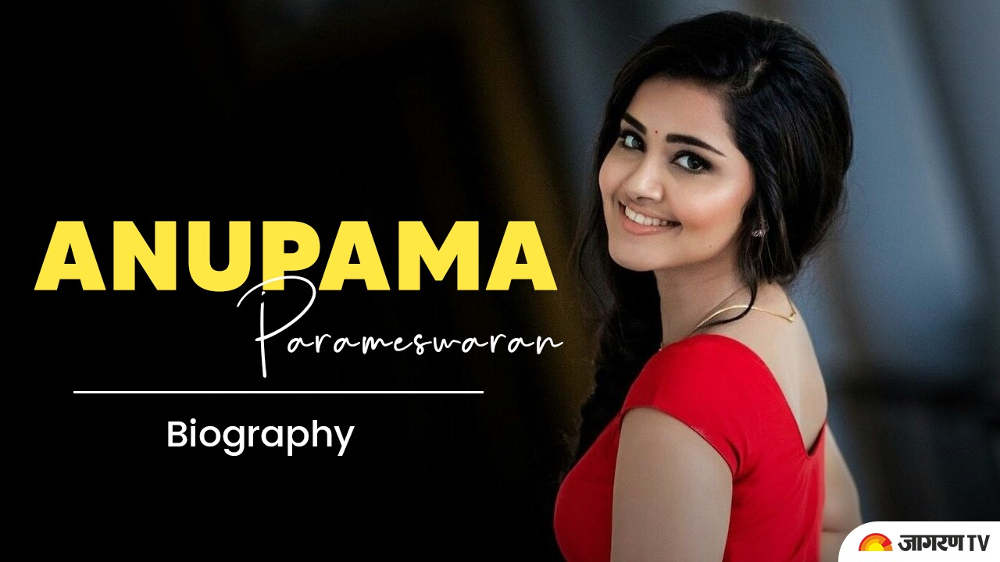

MINI BIOGRAPHY:
 Anupama Parameswaran is an Indian film actress who predominantly appears in Telugu, Malayalam, Tamil, Kannada films.She is best known for her debut role as Mary George in the Malayalam film Premam (2015). Later she appeared in Telugu films such as Sathamanam Bhavati (2017) and Vunnadhi Okate Zindagi (2017). Her Kannada debut was Natasarvabhouma with Puneeth Rajkumar. Anupama was born on 18 February 1996 to Malayali family in Irinjalakuda, Thrissur district, Kerala to Parameswaran Erekkath and Sunitha Parameswaran. She has a younger brother Akshay.She attended CMS College Kottayam, Kerala where she majored in Communicative English until she discontinued college to pursue acting.
ABOUT HISTORY:
to go google